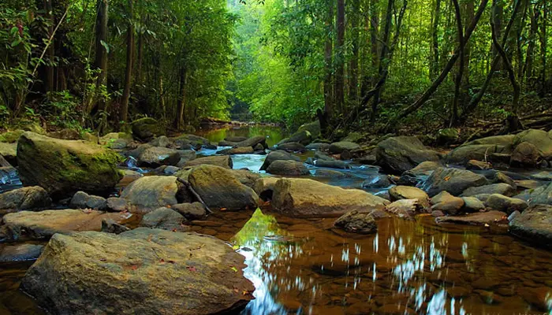
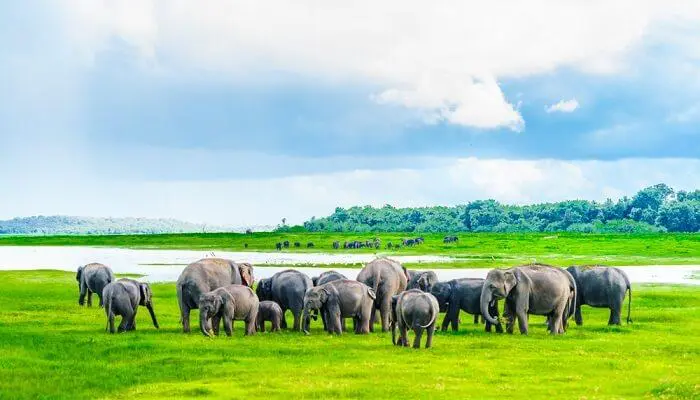
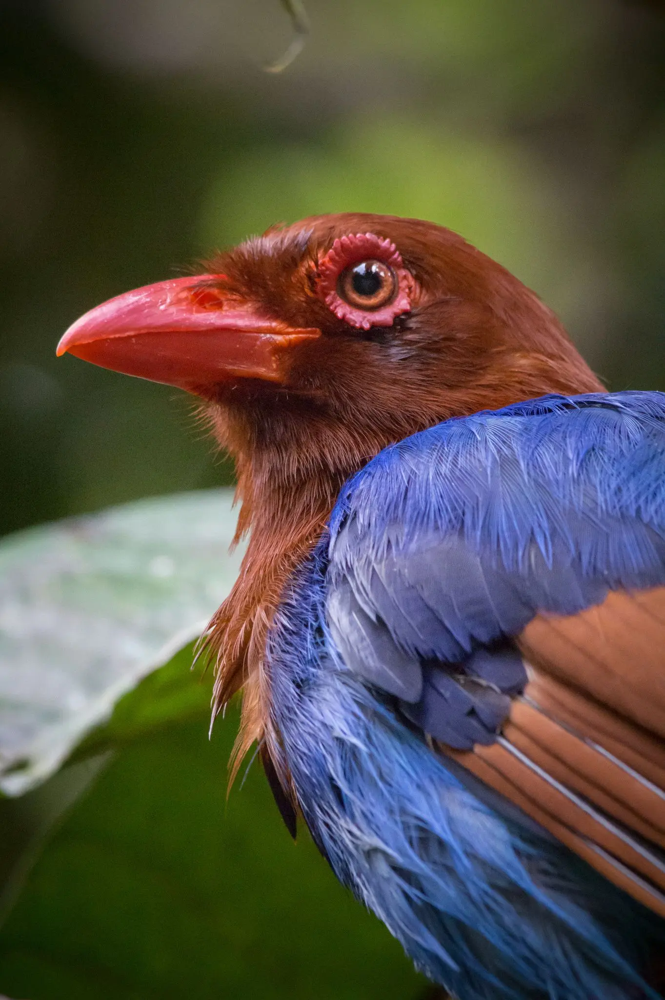
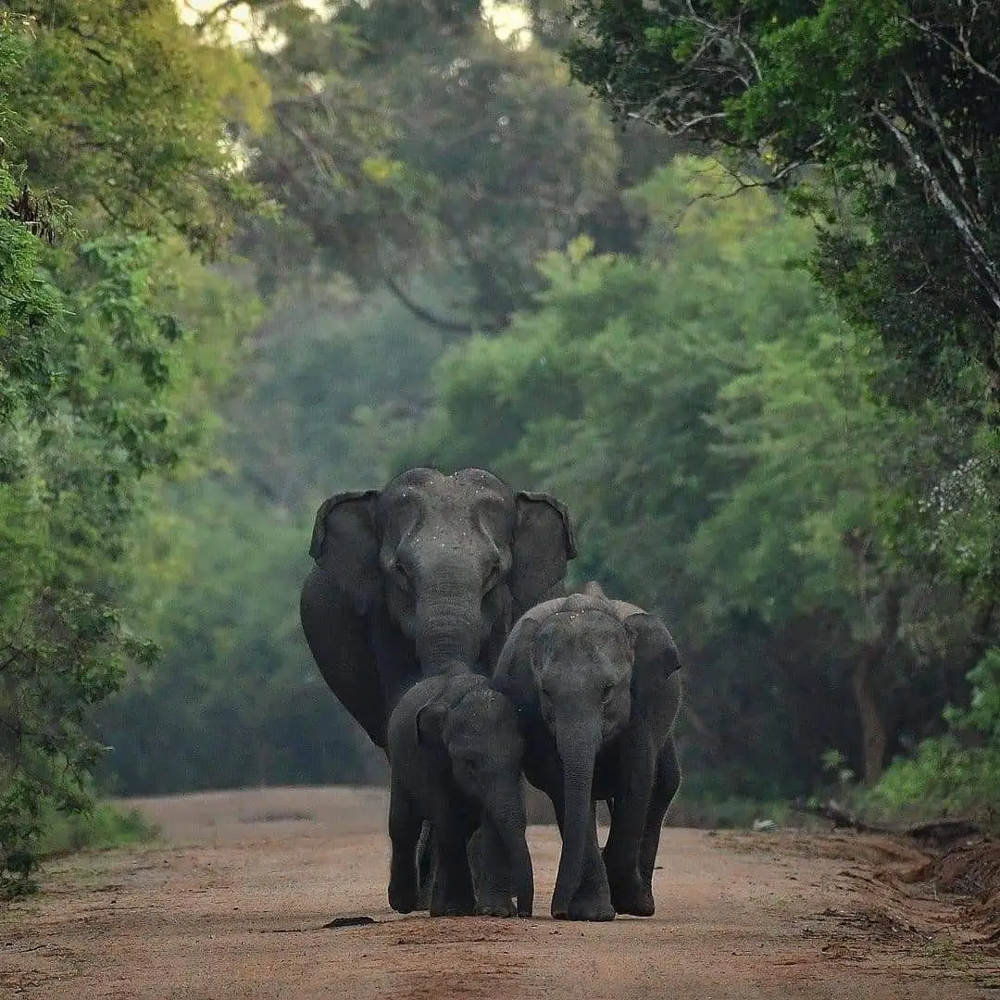
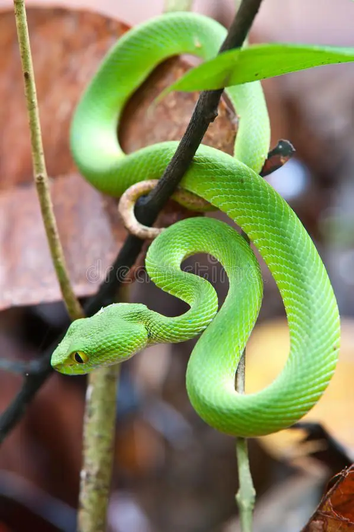
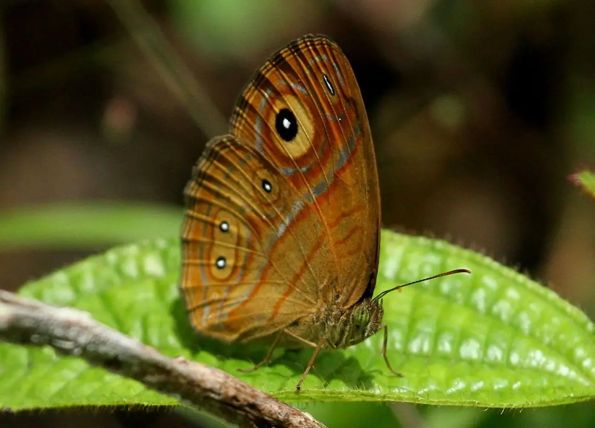

Yala National Park
The Yala National Park is Sri Lanka's second-largest national park and is bordered by the Indian Ocean. It features five blocks and is known for its diverse wildlife. It is also important for the conservation of Sri Lankan elephants and other animals. Aside from its natural environment, the park also has a variety of marine and freshwater wetlands.The park has over 200 bird species and is home to several endemic species of Sri Lanka. It also has the highest densities of leopards in the world.
Sinharaja Forest Reserve
The Sinharaja Forest Reserve is a biodiversity hotspot in Sri Lanka. It has been designated as a World Heritage Site by UNESCO. About 60% of the trees in the reserve are endemic to Sri Lanka. Around 50% of Sri Lanka's endemic animals are found in the Sinharaja Forest Reserve. Due to its dense vegetation, wildlife is not easy to see here. One of the most common mammals in the area is the purple-faced langur.
Udawalawe National Park
The Udawalawe National Park is regarded as one of the most visited parks in Sri Lanka. The diverse habitats it has made it home to a wide range of animals make it an ideal location for wildlife lovers. The main attraction at the park is the elephants, which are believed to have up to 700 individuals living in the area.
Aside from the elephants, the park also has a variety of other wildlife species that are endemic to Sri Lanka. Some of these include the Sri Lankan sloth bear and several bird species.
| Yala National Park | Sinharaja Forest Reserve |
Udawalawe National Park | |
|---|---|---|---|
| Birds  |
There arevover 200 bird species in Yala and six of these are endemic to the country.Some of these include the Leseer Flamingos, Paradise Flycatchers, Black Bitterns and Crested Hawk Eagles. In DDition to the national park, there are other interesting birdlife locations outside the park, such as the Debarawea wetlands and the Palatupana. | Almost all of Sri Lanka's endemic birds are found in the island's Sinharaja. This makes it one of the most significant birds are found in the island's Sinharaja. This makes it one of the most significant bird populations in the country. Another interesting discovery is the presence of several bird flocks, which are known to be mixed species. Some of these groups contain 48 species, and 12 of these are endemic to the island. Some of the most common endemic birds can be found in the Sinharaja Rain Forest include the Red-headed Malkoha, Sri Lanka Blue Magpie, White-headed Starling and Ashy-headed Babbler.The Green-billed Coucal is regarded as the country's most rare bird. |
Over 180 bird species have been recorded in the Udawalawe National Park. Some of these include large number of Warblers, as well as the usual low-country birds and raptor species. Water birds, such as the Indian Cormorants and the Osprey, are also common. Some of the endemic species that can be found in the Park include the Sri Lanka spurfowl, the Sri Lanka Junglefowl and brown-capped Babbler. |
| Mammals  |
One of the best places in the world to spot and photograph leopards is the Yala National Park in Sri Lanka. It has been confirmed that there are over a hundred leopards in this area, and it is believed that they can live up to one person per square kilometer. | Although elephants have been known to be common in the Sinharaja forst reserve in the past, there have been fewer sightings in the last 15 years. Although there are only a few Sri Lankan elephants in the area, other animals such as the Mouse Deer and the Sambar Deer have also been spotted. It's belived that there are around 15 Sri Lankan leopards living in the reserve. Other notable animals that have been spotted here include the Golden Palm Civet and the Brown Mongoose. |
The Udawalawe region is home to various Sri Lankan wildlife species such as the Sri Lankan leopard, the Rusty-spotted Cat and the Fishing Cat. There are also various other species such as the Sri Lankan Axis Deer, the Sri Lankan Spotted Charrotain and the Water Buffalo. Several other animals such as the Asian Palm Civet, the Golden Jackal and the Indian Hare have also been spotted here. There are also five species of mice and three species of Mongoose. |
| Reptiles and Amphibians  |
There are 46 species of reptiles in Yala National Park and five of these are endemic to Sri Lanka. There are also two types of crocodiles that are commonly seen in the park, the saltwater and the mugger.The coastline of the park provides a breeding ground for marine turtles and other marine animals. In addition,there are also 21 species of fish and 21 amphibious species. | The Green Garden Lizard is one of the most common reptiles found on the island. The Calotes liolepis, which is arboreal species, is the only known tortoise that can survive in the Reserve is the hard-shelled Terrapin. Several other snakes,such as the Green Pit Viper and the Humpback-nosed Viper, can also be found in this forest.There are also 8 other endemic species of frogs in Sri Lanka, including the common House Toad and the Torrent Toad. |
Some of the animals that can be found in the park include oriental garden lizards, mugger crocodiles, Bengal monitors, and Asian water monitors. A rare fish species known as the Garra ceylonensis can also be found in the park. |
| Insects  |
Although this area is known to attract various large insects and birds, such as butterflies and spiders, it also provides a sanctuary for lesser known species, such as small insects and dragonflies.To assess the potential of observing butterflies during game rides, five transects were established in the area from January to May 2019 | There are 247 species of butterflies in Sinharaja, and 20 of them are endemic. Some of these are common Bluebottle, Tailed Jay and Common Sailor. In addition, there are also several Tree Nymphs and the Common Jezeble. | Satin trees in the park attract various butterflies.Some of these include the beautiful Papilio crino and the Euploea core. In the riverine forest areas, there are also various species of Graphium sarpedon. |
Flora |
In Block 1, there are forests and various habitats such as wetlands,water holes and lagoons. Like in other areas, Block 2 also has similar vegetation types. However, in terms of forests, block 3, 4 and 5 have more widespread forests. | In Sinharaja, there are miny endemic plants that are used by the people as medicine. Some of these include D.hispidus, Depterocarpus zeylanicus, Mesua nagassarium and Garcinia hermonii. Some of the most common species of plants that are used for medicinal purposes are the Kohomba,Adatoda,Dorana,Binara,Murva,Kara,Bandura,Iruraja,Wellangi,Wanaraja,Binkohomba and Narilatha. | The Udawalawe National Park in Sri Lanka has an endemic Flora that is rich in varies and unusual features. The main areas of the park were previously forseted, with thorn-scrub and savannah grasslands.Most of the forest was destroyed by slash and burn and scattered trees such as Ehala, Kumbuk and Lunumidella are common in the park. |